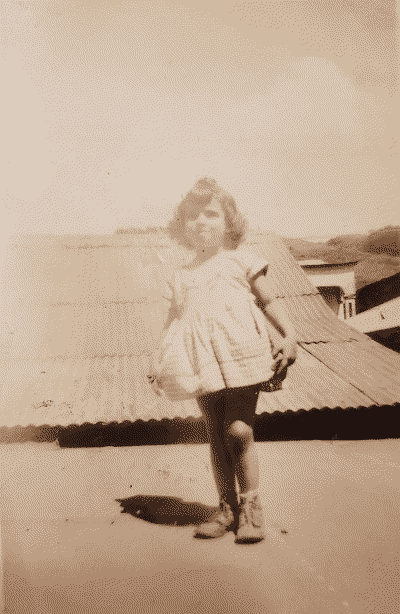
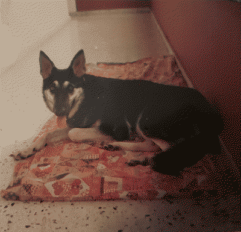
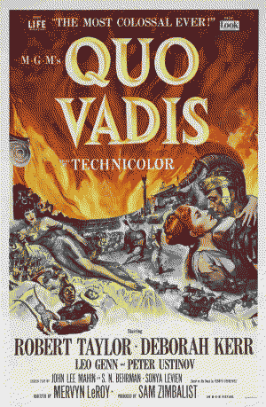
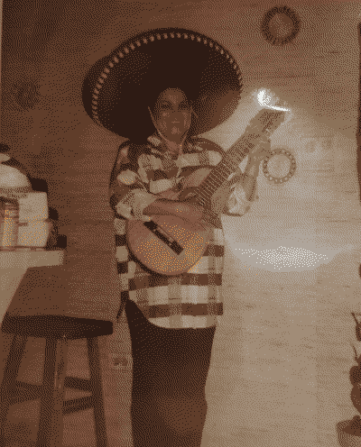
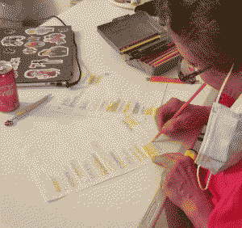

remembering my grandma
my grandma would often say she would not make it past 80 years old. on january of this year she had a stroke and passed away 4 days later. at the age of 80. she would have been 81 years old today if she was still alive.
a day before her death i talked about her a bit on my journal log. i'd like to talk about her a bit more. about the things she would tell me, and what i remember of her life. because truth be told: i am obsessed with talking about my grandma. it makes me happy when i talk about her. as long as someone, anyone, remembers her or knows a little bit about her, then that is good enough to me. i want her presence in this earth to last as long as possible. that is why i want to share this here, on my website. my website will die someday. but i don't think that someday is anytime soon. i like to think that the things i put up here are somewhat inmortal. they'll "never" get erased. i'd like the same for my grandma. or at least: for my memory of her. i want it to last fro as long as it can.
the stories she would tell me are so interesting. just thinking about her makes me smile. her life might have not been the most interesting or crazy in the eyes of others, but to me she was a very wise person with so many experiences. i love my grandma dearly.
throughout my life i have been very close to her. i mean, i basically grew up with her.
grandma and baby me. it was my 5th birthday and it was dora themed. fuck yes.
i have a weird sort of nickname for her: aba. the reason behind this is because i had trouble talking when i was younger. like. i was 3 years old and i still couldn't say shit. grandma in spanish is abuela. i think any other kid would have just went with "abu" as the nickname for their grandparents. but not me though, i'm different. i for some reason ended up calling my grandma aba. i've called her that throughout my life and i'm pretty sure it will be that way til the day i die.
one of the earliest memories i have of her was her buying me a fushia colored care bear that also came with a DVD. i remember watching the DVD with her. i loved that care bear dearly but one day i spilled ketchup on it and i am pretty sure i was ugly sobbing because i could not get the stain away. i have no clue why i didn't asked for an adult's help. i threw it away...
 anyway. in the very same house i stayed to watch my care bears DVD, there was also this german shepherd dog named quina. not sure why that name. i forgot to ask her. but i do know that german shepherds are my grandma's favorite dog breed. again, i don't know the reason why. i think she just grew up with them. but she loved them. i never got to pet her dog when i was little. i think i might have been scared. or she was capable of bitting me.
i also remember her teaching me how to sew during this time of my childhood. she got me a beautiful barbie doll with butterfly wings. she was so gorgeous!! i can't remember if you could detach the wings or not. but she taught me how to sew by making this barbie doll shirts and skirts. they looked like ass. but at least i know what to do now when i have a needle and a thread in hand.
she was always getting me stuff... when i was 10 years old i figured out how to install the cable TV in her apartment and as thanks she bought me my very first build-a-bear. it was a cat and her name was charlotte. i was obsessed with charlotte's web back then.
one day she fell in a pretty big bookstore. a bookstore that ANOTHER very well known bookstore eventually bought (RIP). she tripped in one of those stool thingies while looking for her favorite movie: quovadis. she had to be taken to the hospital. but believe it or not, this is my favorite story of her to tell to other people. she was able to sue the place, and with the money she got, she bought her very own plot of land where she would eventually build her house. for her, that has been one of her greatest achievements. to have a place to call her own. she was 68 when they finished building her house.
and yes. i eventually got her the DVD for quovadis through ebay. she got to see this movie like 100 times the past 4 years because of me.
my grandma had her troubles with family, so she built her house as far away from my home town as possible. i would still visit her frequently and would stay with her during summer breaks. the town she was at was very calm compared to mine. i loved staying with her. and eventually i started living with her for the past 2 years until she passed away.
she was a very active person. she loved doing things. like anything. hanging out with her plants and flowers in the backyard. plucking out the weeds. moving things around. arranging my plushies. putting yet another screw in the wall to hang something. in the kitchen she would make the weirdest fucking food combinations just because she was bored. she was always doing something. anything. it's honestly so impressive to me. no matter in how much pain she was, she always wanted to do something. i would often tell her to take breaks. she had way more energy than me and I would even get tired from just following her around. i often wondered where the fuck did she get all that energy from despite her being old and with something always hurting.
she was impossible to keep still but her true weakness was youtube and netflix. or anything else that could play a video on the TV. sometimes we would watch movies together. one time i showed her Hereditary because she does like her fair share of horror, specially ones that center around demons and stuff. as the credits of Hereditary were rolling, she started saying a prayer. it was so fucking funny. i can't even blame her because that movie freaked me out a little bit too when i watched it for the first time. the last time we got to spend time together, the same night she had her stroke, we watched two horrible tubi movies together. when we finished watching the 2nd movie she said: (roughly translated) this movie sucked. they should make a 2nd movie with a better ending.
and believe it or not, these were her last words on this earth. i also find this hilarious. i'm sure she would laugh as well.
though, her real bread and butter when it comes to films are old mexican movies. she would frequently search them on youtube and was always so disappointed to find out that the video wasn't the full movie, but a clip of a scene. i have no clue how many times i had to explain to her that youtube is not Made for free movies. she would sometimes get lucky and find the whole entire movie in one video though! she would make this gesture with her hands like moving them and go "yes!" when she did. she's just like me.
 she also loved mexican music as well. mariachis and all of that. i think her favorite artist was jorge negrete. she honestly just loved mexico's culture as a whole. she was very fond of it. she would often tell me that if people ever made a funeral for her, i should be in charge of putting very loud mexican music so people can stop crying and dance to the music instead.
i don't know why but i was very scared of the sombrero seen in the picture next to this text when i was little. there was something very wrong with me when i was little. my grandma had to put the sombrero away everytime i went to visit her.
throughout her life she has been a very creative person as well. when she was young she took some ceramic* classes to make sculptures and other decorations out of clay (and probably other materials that i'm forgetting) and painted them all on her own. when i moving into my new place, i brought some of her stuff with me.
.png)
.png)
.png)
.png)
i would let her borrow my colored pencils and she would write bible passages on a paper with them and then color them. i always liked saying that she looked like a little kid when she did this.
while talking to my mom and uncle about her, they have told me that aba acted very differently with me to how she 'normally' was. we would always make each other laugh with our own stupid shit. actually we were probably always laughing. she had a very contagious laugh. our relationship was very special to me. specially when i started living with her for the past 2 years before her death. i definitely grew closer to her during that time. somehow since i've always been pretty close to her.
in my time with her, there were times where my mental health was not the best. i would start sobbing randomly. i would literally lie on the floor and fall asleep there. and she would come up to me with such a soft voice asking if i wanted to go to the nearest mall. i was at my lowest, but it meant a lot to me that she cared for me. she definitely helped me in a way. i'm not sure where i would be without her.
she would often tell me that i shouldn't be sad if something happened to her. two days before she had her stroke she told me this: focus on your studies and forget about me.
i remember the slight smile she had on her face when she said it. i don't think i'll ever be able to forget you...
happy birthday aba :) i love you and miss you.
written with love by des, 04.jul.24